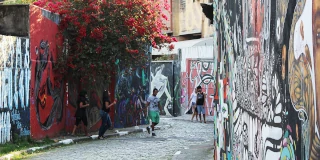
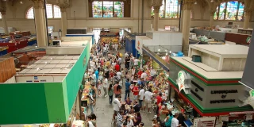
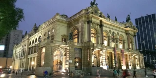

São Paulo
São Paulo
23.5505° S, 46.6333° W
the most populous city proper in the Western and Southern Hemispheres
the city with the largest GDP in Latin America
the host of the FIFA World Cup in 1950 and 2014
a city nicknamed the Land of Drizzle
a city named after a Christian Apostle

São Paulo, Brasil
São Paulo, Brazil
Non ducor, duco
Oro en Paz, Fierro en Guerra

Museu de Arte de São Paulo
São Paulo Museum of Art
Avenida Paulista
Avenida Brasil

Beco do Batman
Batman's Alley
Vila Madalena
Colonia Roma


Theatro Municipal
Municipal Theatre
Ramos de Azevedo
Lina Bo Bardi